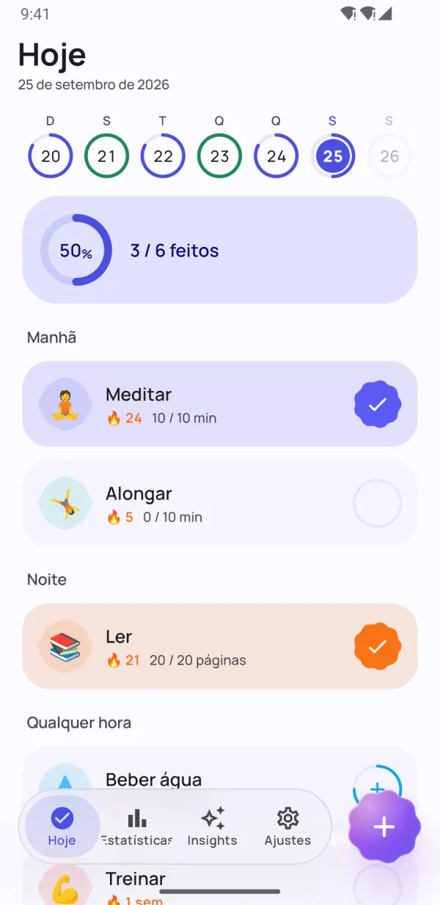
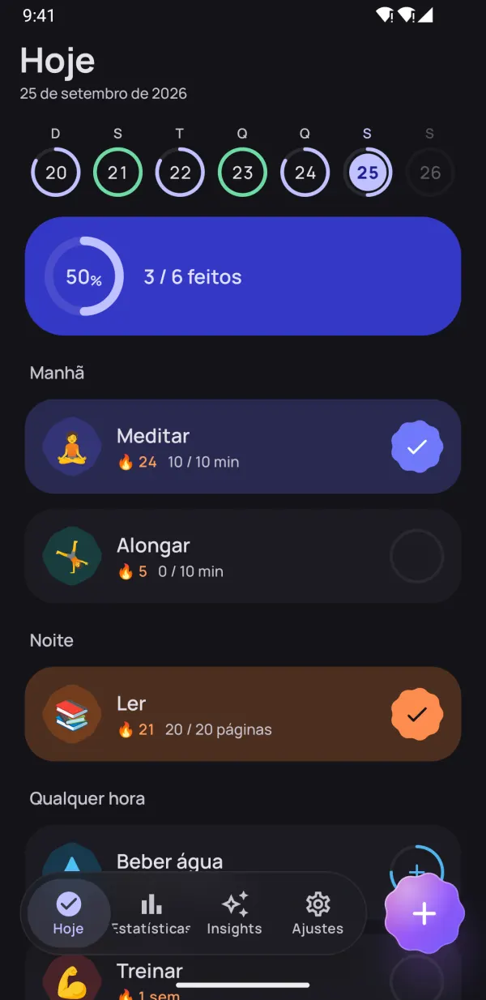
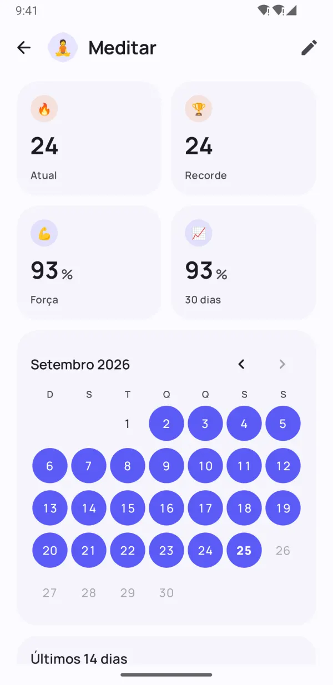
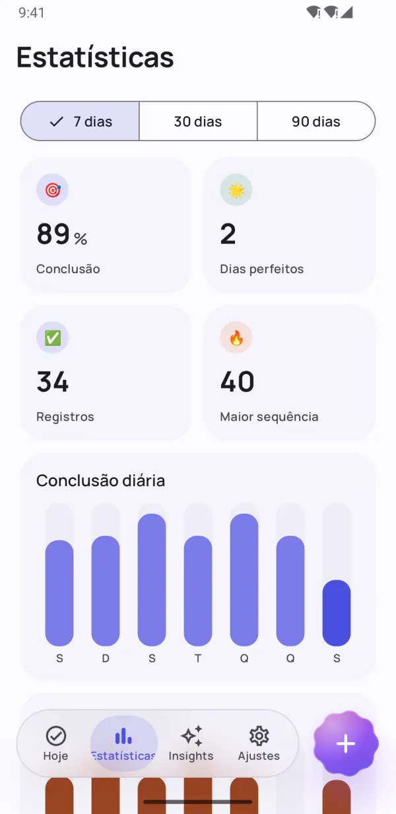
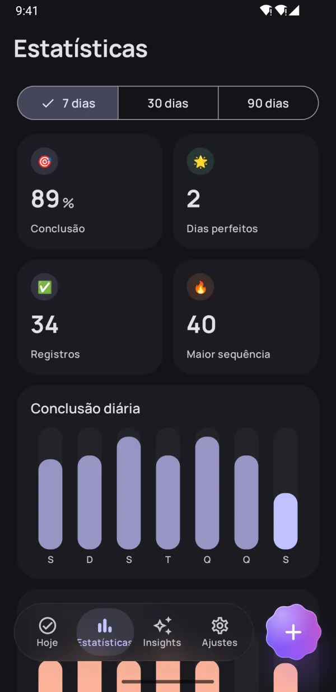
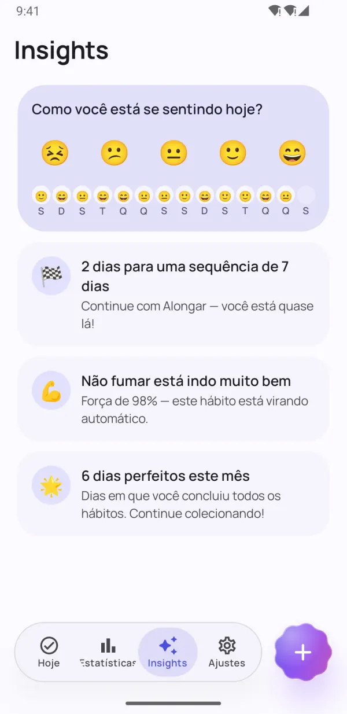
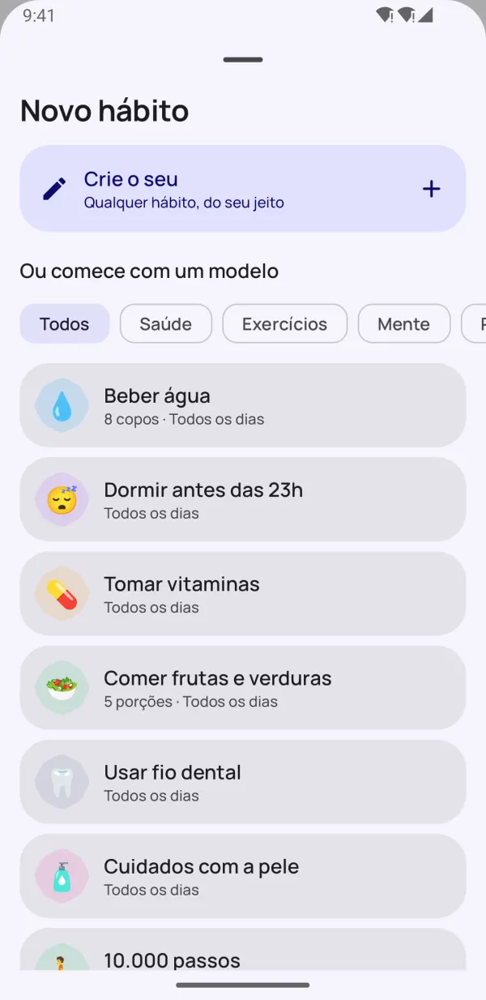
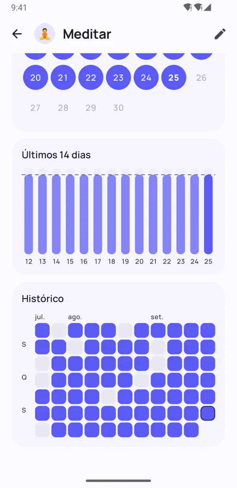

Pequenos hábitos.
Grandes mudanças.
O Dotday ajuda você a criar bons hábitos e largar os ruins — sem pressão. Faça check-in com um toque, mantenha sua sequência viva nos dias corridos e descubra o que realmente funciona para você.
- Grátis para usar
- Sem cadastro
- Dados ficam no seu celular
- 13 idiomas


Feito para seus hábitos durarem
Tudo o que você precisa para manter a constância — e nada que atrapalhe.
Seu dia inteiro a um toque
Grupos de manhã, tarde e noite transformam sua rotina numa checklist simples. Um toque e pronto.
- Sim/não, contagens, timers e hábitos para largar
- A faixa da semana mostra cada dia num relance
- "Feito" e "Em 10 min" direto no lembrete

Sequências que perdoam um dia ruim
Dias de descanso, agenda flexível e congelamentos de sequência mantêm você no ritmo. A força do hábito mostra o quanto ele está realmente consolidado — não só o tamanho da sua sequência.
- Pule um dia sem quebrar sua sequência
- Congelamentos para dias corridos ou de doença
- Força do hábito de 0 a 100%


Veja seu progresso real
Mapas de calor, calendários e tendências de conclusão mostram exatamente como você está em 7, 30 e 90 dias.
- Mapa de calor de cada hábito
- Recorde de sequência e taxa de conclusão
- Lindo no modo claro e no escuro

Insights que mantêm você motivado
Registre seu humor em um segundo e o Dotday descobre o que realmente funciona: seus melhores dias e os mais difíceis, e quais hábitos melhoram seu humor.
- Registro de humor com um toque
- Avisos antes do seu próximo marco
- Descubra os hábitos que deixam você mais feliz
Pequenos detalhes, grande diferença
Recursos pensados para acompanhar seus hábitos sem esforço.
Widgets na tela inicial
Marque os hábitos de hoje, acompanhe uma sequência ou um mapa de calor — sem abrir o app.
Lembretes que funcionam
Conclua ou adie um hábito direto na notificação.
Timer integrado
Hábitos por tempo ganham um timer com notificação ao vivo.
Health Connect
Passos, sono e treinos podem concluir hábitos automaticamente.
40 modelos
Água, leitura, treino, meditação, não fumar — comece em segundos.
Planeje seu dia
Agrupe hábitos em manhã, tarde e noite.
Anotações e humor
Adicione uma anotação a qualquer dia e veja como os hábitos afetam seu humor.
Modo escuro e AMOLED
Cores do Material You e um tema preto puro para telas OLED.
Backup e exportação
Exporte tudo em JSON ou CSV com o Pro e restaure em um celular novo.
Dê uma olhada por dentro
Crie hábitos que ficam Veja seu progresso real Suas estatísticas num relance Insights que te motivam 
Comece em segundos com 40 modelos Lindo no modo escuro 
Cada dia, bem registrado Privado. Sem conta. Sem anúncios.
Comece em menos de um minuto
Sem conta, sem configuração, sem complicação. Leia o guia completo →
Escolha seus hábitos
Use um dos 40 modelos ou crie o seu — qualquer hábito, do seu jeito.
Faça check-in todo dia
Um toque na tela Hoje, num widget ou na notificação.
Veja os hábitos pegarem
Sequências, força do hábito e insights mostram seu progresso crescer.
Privacidade em primeiro lugar
Sem conta. Sem cadastro. Sem anúncios. Seus hábitos, anotações e humores ficam só no seu celular — nós nunca os vemos. Política de Privacidade
- Sem conta
- Sem anúncios
- Offline
- Seus dados, seu celular
Libere tudo com o Pro
O app principal é grátis para sempre. Seja Pro para ter hábitos ilimitados e todos os recursos — teste grátis por 7 dias.
- Hábitos ilimitados
- Histórico completo e estatísticas de 90 dias
- Todos os insights e correlações com o humor
- Registro automático com o Health Connect
- Todos os widgets
- 5 congelamentos de sequência por mês
- Até 5 lembretes por hábito
- Exportação para JSON e CSV
Plano mensal, anual ou compra única vitalícia. Cancele quando quiser no Google Play.
Perguntas frequentes
O Dotday é grátis?
Sim. O app principal é grátis para sempre: até 5 hábitos, lembretes, sequências, o widget Hábitos de hoje e 30 dias de estatísticas. O Dotday Pro libera hábitos ilimitados e todos os recursos, com 7 dias de teste grátis.
Preciso criar uma conta?
Não. O Dotday funciona sem conta, sem cadastro e sem internet. É só instalar e começar.
Onde ficam meus dados?
Só no seu celular. Seus hábitos, anotações e humores nunca saem do aparelho. Com o Pro, você pode exportar um backup em JSON ou CSV quando quiser.
E se eu perder um dia?
Seu progresso não some. Você pode pular o dia como dia de descanso, usar um congelamento de sequência ou definir uma meta semanal em vez de diária. A força do hábito cai aos poucos em vez de zerar.
Que tipos de hábito posso acompanhar?
Quatro tipos: sim/não ("meditar"), contagens ("8 copos de água"), timers ("30 minutos de leitura") e hábitos para largar ("não fumar").
Como levo meus hábitos para um celular novo?
Com o Dotday Pro, abra Ajustes → Seus dados → Exportar backup e salve o arquivo JSON. No celular novo, instale o Dotday e escolha Restaurar backup — restaurar é grátis.
Tem versão para iPhone?
Ainda não — por enquanto o Dotday está disponível para Android no Google Play.
Como cancelo o Pro?
Abra o Google Play → Perfil → Pagamentos e assinaturas → Assinaturas, escolha o Dotday e toque em Cancelar assinatura. Uma compra vitalícia nunca precisa ser cancelada.
Hábitos com base na ciência
Guias práticos baseados em pesquisas revisadas por pares. Cada número leva à sua fonte.
Como criar um hábito: um método de 7 passos apoiado pela ciência
Criar um hábito é repetir uma pequena ação depois do mesmo gatilho diário até ela rodar no piloto automático. Veja como formar um hábito novo passo a passo e quanto tempo isso leva de forma realista.
7 min de leituraLer artigo →Regra dos 21 dias: leva mesmo 21 dias para formar um hábito?
A regra dos 21 dias é um mito que nasceu num livro de autoajuda de 1960. As pesquisas sugerem que a maioria dos hábitos leva de dois a cinco meses, e que falhar um dia quase não faz diferença.
6 min de leituraLer artigo →Como usar um rastreador de hábitos (e por que ele funciona)
Um rastreador de hábitos funciona porque torna o automonitoramento automático, e acompanhar o progresso ajuda de forma consistente as pessoas a atingir suas metas. Veja o que dizem as pesquisas, como montar o seu do jeito certo e os erros que fazem as pessoas desistirem.
7 min de leituraLer artigo →